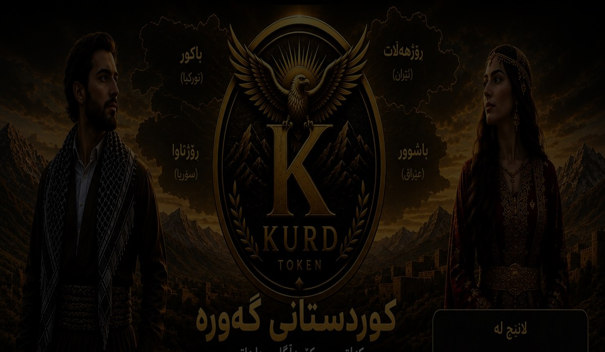

01
کرمانجی — کوردیی باکووری
کرمانجی...
- ناوچەی سەرەکی
- نووسین
- شێوەزارەکان
KURD Token پرۆژەیەکی دیجیتاڵە کە کەلتوور، مێژوو و ناسنامەی کوردی بە تەکنەلۆژیا و جیهانی کریپتۆ پەیوەست دەکات.
ئامانجێکی سادە: بە یەک کلیک کوردستان بناسیت.
کۆی دابینکردنی توکن ٤٤٪، نزیکەی ١٬٩٥٥٬٥٥٥٬٥٥٥ KURD، بۆ نقدینەگی پلاندانراوە.
ئەمە پلانی فەرمی Tokenomics ـە و هەر Wallet ـێکی تەرخانکراو پێش بەکارهێنان دەبێت بڵاو بکرێتەوە.
مامەڵەکردن لە کاتی Launch دوای بڵاوکردنەوەی کۆنتراکتی فەرمی و دروستکردنی نقدینەگی چالاک دەکرێت.
تا کاتی Deploy ـی کۆنتراکت و دروستکردنی Liquidity، کڕین و فرۆشتن چالاک نییە.هەر هەفتە شارێکی نوێ لە هەر چوار بەشی کوردستان ناسێنراوە.
بارکردنی زانیاریی شاری هەفتە…

هەر شار بە زانیاری و وێنەی ناوخۆیی پێشکەش دەکرێت.
مێژووی کوردستان مێژوویەکی درێژ و ئاڵۆزە.
ناوچەی زاگرۆس و بینالنهرین لە سەردەمی کۆنەوە شوێنی ژیانی کۆمەڵە گەلی جیاواز بوو.
لە سەدەکانی ناوەڕاستدا خاندان و دەسەڵاتە کوردییەکان لە ناوچە جیاوازەکاندا پەرەیان سەند.
لە سەدەکانی ١٥ تا ١٩، ژمارەیەکی زۆر لە ئیمارەت و خاندانە کوردییەکان دەسەڵاتی ناوخۆیییان هەبوو.
ڕکابەری عوسمانی و سەفەوی کاریگەرییەکی زۆری لەسەر ناوچە کوردییەکان دانا.
بەهێزبوونی دەسەڵاتی ناوەندی هۆکاری لاوازبوونی زۆرێک لە ئیمارەتە کوردییەکان بوو.
دوای جەنگی جیهانی یەکەم، بارودۆخی سیاسیی کوردەکان بە شێوەیەکی گەورە گۆڕا.
سێڤر و لۆزان دوو خاڵی زۆر گرنگن لە مێژووی سەدەی ٢٠.
لە سەدەی ٢٠ و ٢١، ژیانی سیاسی و کۆمەڵایەتیی کوردەکان لە چوار دەوڵەتدا بە ڕێگای جیاواز پەرەی سەند.
شوێنە مێژوویی و سروشتییەکان.
میراثی مێژوویی و سروشتی.
شوێنە مێژوویی و سروشتییەکانی باشوور.
شوێنە مێژوویی و سروشتییەکان.
شاعیر و ئەدیب.
زانایان و بیرمەندان.
مێژووناسان.
پەیوەندیی ناوچەیی تەنها بە سەرچاوەی پشتڕاستکراوە.
میراثی دنگبێژی و گۆرانیی نەریتی.
مۆسیقای کلاسیک و نوێ.
ژنانی هونەرمەند.
هونەرمەندانی هاوچەرخ.
قاڵی و گلیم.
زیوەر و فلزکاری.
دارکاری و چەرم.
کڵاش و پێڵاو.
جل و بەرگی ژنان.
جل و بەرگی پیاوان.
شێوازی جیاوازی ناوچەیی.
هەر پارچەیەک شێوازی خۆی هەیە.
خواردنی ناوچەیی.
خواردنی ناوچەیی.
نان و خواردنی ماڵەوەیی.
خواردنی ناوچەیی.
کرمانجی.
سۆرانی.
زازاکی / کرمانجکی.
ئەدەبیاتی کوردی.
زمانی کوردی؛ یەک میراث، چەندین شێوە و سیستەمی نووسین

کرمانجی...
سۆرانی...
کوردیی باشووری...
گۆرانی و هەورامی...
زازاکی...
سۆرانی...
کرمانجی...
سۆرانی...
کرمانجی...
هەوار...
ئەلفوبێی سۆرانی...
سیستەمی مێژوویی...
ئەم ئەتڵەسە جیاوازی نێوان پۆلێنکردنی زمانەوانی و بەکارهێنانی کۆمەڵایەتیی ناوی «کوردی» ڕوون دەکاتەوە.
 The map is approximate.
The map is approximate.
کرمانجی فراوانترین و جغرافیاییترین گروپی کوردییە.
سۆرانی لە باشووری کوردستانی عێراق و بەشێک لە ڕۆژهەڵات بەکاردێت.
کوردیی باشووری لە کرماشان، ئیلام و ناوچە پەیوەندیدارەکانی عێراق بەکاردێت.
لەکی پۆلێنکردنێکی یەکسانی نییە.
گۆرانی ناوی کۆمەڵێک شێوەی ئێرانییە.
هەورامی لە هەندێک تایبەتمەندی پارێزراوترە.
زازاکی لە ڕۆژهەڵاتی تورکیا بە چەند شێوەی ناوخۆیی بەکاردێت.
ناوی زمان و ناسنامەی کۆمەڵایەتی هەمان شت نین.
لەکی بە پێی سەرچاوە و ڕێبازی توێژینەوە جیاوازە.
| گروپ | ناوی باو | ناوچەی سەرەکی | نووسین | تێبینیی پۆلێنکردن |
|---|---|---|---|---|
| Northern | Kurmanji | Türkiye, Syria, N Iraq, parts of Iran/Caucasus | Latin; others historically | Widely treated as Northern Kurdish |
| Central | Sorani | Iraq Kurdistan, parts of Iran | Arabic-Persian-based Kurdish | Widely treated as Central Kurdish |
| Southern | Southern Kurdish | Kermanshah, Ilam, adjacent Iraq | Arabic-Persian-based; Latin in some contexts | Internal diversity is high |
| Zaza–Gorani | Gorani / Hawrami | Hawraman and linguistic pockets | Various literary/writing traditions | Often classified separately from the three major Kurdish groups |
| Zaza–Gorani | Zazaki | Eastern Türkiye | Latin and other historical systems | Often treated as a distinct NW Iranian language |
| Borderline | Laki | Zagros contact zone | Multiple traditions | Classification varies by scholar |
ئەم بەشە لەگەڵ کۆمەڵێک سەرچاوەی ئەکادیمی کراوە و نوێکراوەتەوە.
ئەم بەشە بۆ شەفافیەتی زانیارییەکانە.
A multilayered archaeological tell in Erbil.
UNESCO — Erbil CitadelA cultural landscape of the Zagros.
UNESCO — Hawraman/UramanatHistoric city, walls, gardens and river landscape.
UNESCO — Diyarbakır & HevselA major archaeological site of western Iran.
UNESCO — BisotunDated official statistics with source labels.
KRSO — PopulationNo fabricated statistics.
بۆ پشتگیریی کارە سەرەتاییەکانی پڕۆژە بەکاردێت.
ئەم 2٪ ـە بۆ زیادکردن بە ناو Liquidity Pool نییە.
شەفافیەت لە بەڵگەنامەکاندا.
وێبسایت، Tokenomics، کۆمەڵگا و Launch.
چالاکی و ناوەڕۆکی بەردەوام بۆ کۆمەڵگا.
ناساندن و بەهێزکردنی ناسنامەی براند.
زیادکردنی شار، شوێن و ناوەڕۆکی کەلتووری.
بەرهەم و هاوبەندییە نوێکان بەپێی گەشەی پڕۆژە.
میراثی مێژوویی و شارستانیی کوردستان.
نیشانەی ناسنامە، هونەر و جۆراوجۆری ناوچەکان.
دەنگی کەلتوور، بیرەوەری و ژیانی کۆمەڵگا.
تامێک لە کەلتوور و نەریتەکانی کوردی.
هونەری دەست و میراثی نەوە بە نەوە.
پڕۆژەکە دەتوانێت ناسنامەیەکی ناپەرەسەندراوی تیم بەکاربهێنێت، بەڵام زانیارییە گشتییەکان ڕوون دەبن.
 Telegram — کوردی@kurdtoken_ku
Telegram — فارسی@kurdtoken_fa
Telegram — English@kurdtoken_en
Telegram — Türkçe@kurdtoken_tu
Telegram — العربية@kurdtoken_ar
Telegram — کوردی@kurdtoken_ku
Telegram — فارسی@kurdtoken_fa
Telegram — English@kurdtoken_en
Telegram — Türkçe@kurdtoken_tu
Telegram — العربية@kurdtoken_ar
 Instagram@kurdtoken4
Instagram@kurdtoken4 X@kurdtoken4
X@kurdtoken4بە یەک کلیک کوردستان بناسە.